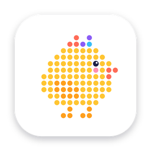
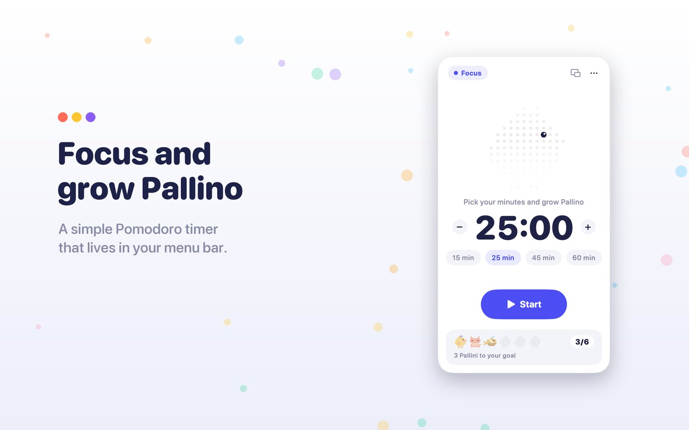
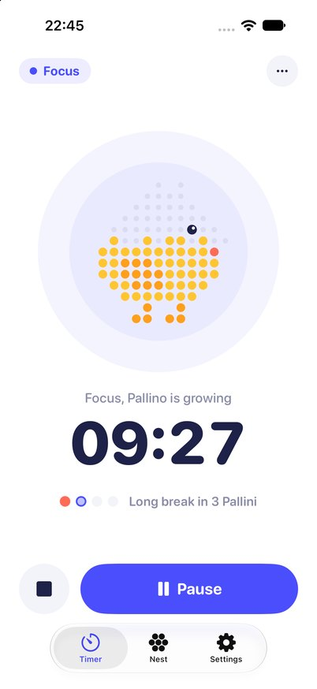

Pallino
A Pomodoro timer that grows while you focus.
macOS ● in App Store review iPhone & iPad ● building
- Pallino builds himself one dot at a time while you focus, feet first, crest last
- quit halfway and he runs away: no Pallino in your nest today
- every session hatches one; 10% are golden, 3% rainbow
- daily goals and streaks unlock the cat, the whale and the dog
- lives in the menu bar on Mac, in the Dynamic Island on iPhone
- your nest syncs through your own iCloud, no account needed

